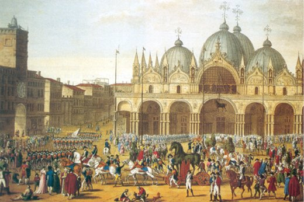
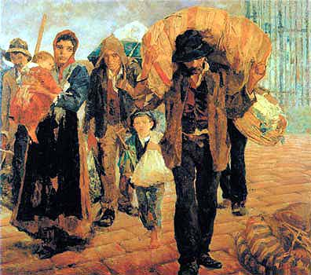
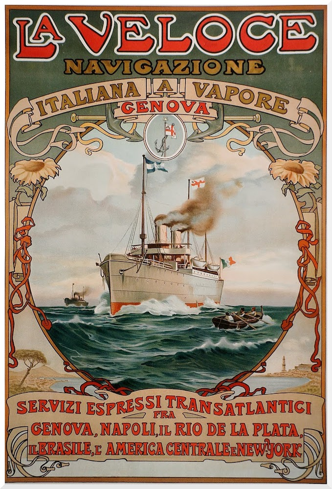
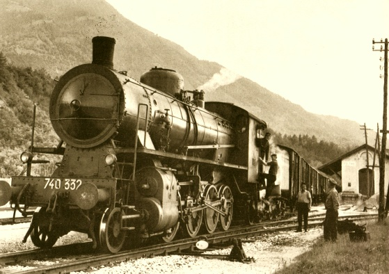

As guerras italianas foram uma série de conflitos no norte da Itália entre 1494 a 1559. Inicialmente o conflito foi motivado por uma disputa dinástica em que os soberanos franceses pretendiam fazer valer seus direitos hereditários sobre o Reino de Nápoles e posteriormente, sobre o Ducado de Milão. É importante ressaltar que nessa época a Itália não era um país, mas uma mistura de monarquias, cidades-estado e repúblicas. Houveram pelo menos dez conflitos armados com participação de pelo menos oito países. No final das guerras, a Espanha passou a controlar muitos dos estados italianos direta ou indiretamente.{% cite wiki-italianwars %}
É perfeitamente possível que os Mariot tenham surgido na Itália nessa época. Houveram muitas campanhas francesas na Itália em todas as guerras, e a França se aliou à Inglaterra mais de uma vez (o que significa que, se os Mariot do Vêneto eram associados aos britânicos, essa época também seria ideal para que um ancestral se instalasse na Itália).
Após a guerra da sucessão espanhola entre 1701 e 1714, grande parte da Itália (Milão, Nápoles e Sardenha) caiu sob controle austríaco, o que influenciou a diáspora italiana no final do século XIX.{% cite wiki-spanishsuccession %}
A Unificação da Itália e a diáspora italiana

Veneza durante a ocupação das tropas napoleônicas.
No fim do século XVIII, Napoleão Bonaparte fez campanha contra a Áustria e derrotou o Reino da Sardenha, aliada da Áustria, em duas semanas. Seguindo com seu exército para a Áustria, Napoleão cruzou os territórios da Veneza, que era um estado neutro. Após a recusa do doge de Veneza em auxiliar as tropas francesas, Veneza foi invadida por Napoleão em 1797 e cedida, em troca da Bélgica, à Áustria.
Napoleão unificou os reinos da Itália, declarou uma república italiana e mais tarde a converteu em uma monarquia encabeçada por seu primo Eugene D'Beauharnais. Porém, após a derrota das tropas francesas na Rússia, outros estados europeus se aliaram à Áustria contra a França, incluindo Nápoles, liderada pelo rei Joachim Murat, que havia sido um almirante francês. Com Napoleão exilado, a Itália foi novamente dividida no congresso de Vienna em 1814 e as regiões da Lombardia e da Veneza voltaram ao controle austríaco. Mas as repúblicas que existiam antes do domínio napoleônico como Veneza e Gênova não foram restauradas.
Vittorio Emanuele II
Quando Napoleão voltou do exílio, Murat reestabeleceu a aliança com a França, mas os italianos não quiseram lutar por Napoleão e Murat foi executado. Assim, os antigos soberanos das repúblicas e estados da época antes de Napoleão aos poucos voltaram ao poder. Os ducados de Parma e Modena foram reformados, os estados papais e Nápoles voltaram ao controle dos Bourbons e por vinte anos, entre 1815 e 1835, a Itália passou por um período de restauração que levou a protestos e rebeliões e eventualmente às guerras de independência. Revoltas aconteceram na Lombardia e no Vêneto e Piedmont-Sardinia declarou guerra à Áustria. Desse conflito a Lombardia foi libertada do domínio austríaco e a Itália foi unificada sob os auspícios do rei Vittorio Emanuele II.
Em 1866, a Prússia liderada pelo chanceler Otto Von Bismarck, com o objetivo de unificar a Alemanha, tentou anexar a Áustria. Após um período de instabilidade, a Áustria declarou guerra à Prússia. O recém-formado Reino da Itália na época se aliou à Prússia e entrou no conflito que ficou conhecido como a Guerra Austro-prussiana. No fim desse conflito, o Vêneto foi incorporado à Itália.
A guerra terminou em sete semanas com o Tratado de Viena. O novo Reino da Itália estava em uma situação muito instável. Impostos muito altos, serviço militar obrigatório de até sete anos, industrialização de algumas áreas no norte e novas técnicas de agricultura tornaram a vida difícil para pequenos agricultores, donos de pequenos negócios e jovens. Esses fatores fizeram com que milhões de italianos emigrassem entre 1880 e 1920. Estima-se que 4 milhões foram para os Estados Unidos e mais ou menos 2 milhões foram para o Brasil. 30% desses italianos eram da região do Veneto.
O novo mundo
Cosa intende per nazione, signor Ministro? Una massa di infelici? Piantiamo grano ma non mangiamo pane bianco. Coltiviamo la vite, ma non beviamo il vino. Alleviamo animali, ma non mangiamo carne. Ciò nonostante voi ci consigliate di non abbandonare la nostra Patria. Ma è una Patria la terra dove non si riesce a vivere del proprio lavoro?
Resposta de um imigrante italiano a um ministro italiano, sec. XIX, reportada por Costantino Ianni - Homens sem paz, Civilização Brasileira, 1972

Imigrantes italianos
Em 1850 o Império do Brasil criminalizou o comércio de escravos africanos através da Lei Imperial nº 581, conhecida como "Lei Eusébio de Queirós". Essa lei foi seguida da Lei Imperial nº 3.353, ou "Lei Áurea", promulgada em 1888. Em 1889, houve um golpe e foi declarada uma República de cunho ditatorial.
A abolição da escravidão no Brasil sofreu forte oposição de fazendeiros, que passaram a buscar uma fonte de mão-de-obra alternativa para suprir a lacuna deixada pelos africanos. A solução foi facilitar e promover a imigração de europeus que passavam dificuldades na Europa devido às constantes guerras e perseguições políticas. A princípio, os europeus que imigravam para o Brasil passavam a ficar imediatamente endividados, mas a estratégia mudou e o Império passou a organizar a criação de colônias onde os imigrantes obteriam propriedade de terra.
Com a proclamação da República, o projeto de imigração continuou. O estado fazia contratos com operadores de transportes marítimos; os imigrantes poderiam obter passagem de terceira classe gratuita, pagas pelo estado. E ao chegar no Brasil eram transportados para uma colônia, onde receberiam moradia, ferramentas e comida por um tempo limitado. Mas nem sempre o estado honrava o acordo. Os imigrantes receberam cidadania brasileira automaticamente com a constituição de 1891, em um evento hoje conhecido como a "grande naturalização", a não ser que manifestassem desejo em contrário em um prazo de 6 meses.
As viagens ao Brasil

Propaganda da companhia La Veloce. A esposa de Giosuè, Giovanna Cordella, viajou por essa companhia.
Entre 1879 e 1882 (antes do Brasil ser uma república), Matteo Ignazio Mariot e os membros da sua família embarcaram em navios a vapor com destino à América do Sul para nunca mais voltar. Mas como os Mariot tomaram essa decisão?
Os agentes de emigração foram os grandes responsáveis pela imigração em massa de italianos para o Brasil. Em 1892, existiam na Itália 30 agências de emigração e 5.172 subagentes que perambulavam pelo país persuadindo as pessoas a irem ao Brasil. Os agentes eram contratados pelas companhias de imigração e eram conhecidos pela sua falta de honestidade. Passavam pelas aldeias nos dias de feira ou mercado, vendendo uma idéia positiva do Brasil, assegurado sucesso financeiro e propriedade ao alcance das mãos. A companhia de imigração La Veloce pagava entre 5 e 25 dólares para o agente que conseguisse convencer uma família a imigrar para o Brasil.{% cite servetti %}
Os lavradores italianos não eram tolos. Não apenas eles não acreditariam em qualquer história que os agentes contassem, mas a imprensa italiana comparava esses mesmos agentes de emigração a negreiros, depois que notícias da situação precária dos imigrantes nas colônias de café em São Paulo chegaram à Itália. Para crer que a situação no Brasil pudesse ser melhor eles precisavam de maiores garantias. A teoria é que o convencimento se deu quando pessoas de importância passaram a endossar as histórias e confirmar os boatos, pessoas como prefeitos e padres e secretários municipais. Assim a segunda onda de imigrantes italianos começou a dar ouvidos. E conforme mais e mais italianos se dirigiam aos portos, mais atraente se tornava a idéia.{% cite trento --locator 29-30 %}
Os Mariot certamente não foram os primeiros emigrantes de Longarone. Em 1878, apenas 1 ano antes de Matteo se dirigir ao Brasil, pelo menos 76 famílias do mesmo município se estabeleceram na colônia de Urussanga, incluindo um grande número de pessoas com sobrenomes De Bona, De Lorenzo, Mazzuco, entre outros.{% cite tomio %}{% cite baldessar --locator 53-56 %}
As jornadas dos Mariot

Estação de Feltre, entre Longarone e Gênova.
O porto mais usado pelos emigrantes italianos da região norte no século XIX era o porto de Gênova. Era de lá que a maioria dos italianos que se instalaram nas colônias de Santa Catarina normalmente partiam. Freqüentemente, quando alguém mandava boas notícias do Brasil, muitos membros de uma vila partiam para o porto e viajavam juntos, como se estivessem se dirigindo a uma festa ou congregação. Era comum ir para o porto de carroça e de trem, e muitos iam a pé.{% cite trento --locator 30-31 %}
Os Mariot que viviam em Longarone em 1871 foram para o Brasil em quatro jornadas separadas (com excessão dos mortos). Matteo e Marco foram primeiro em 1879 acompanhados por membros da família Longo; Giovanni seguiu com esposa e filho em 1880; e em 1882, Pietro levou a mãe, esposa, filha e irmãs; e Giosuè foi sozinho, último a deixar a Itália, alguns meses depois.
É interessante observar que muitos dos imigrantes de Longarone partiram de portos na França, inclusive Matteo e Marco, e muito provavelmente, Giosuè.
Você sabe algo sobre as viagens dos Mariot que não está nesta página?
Por favor entre em contato e publicarei aqui.
 Vittorio Emanuele II
Vittorio Emanuele II